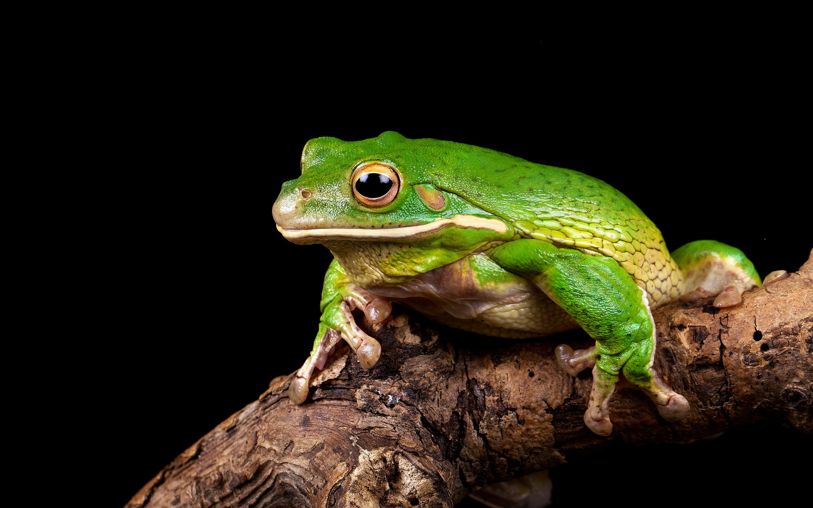
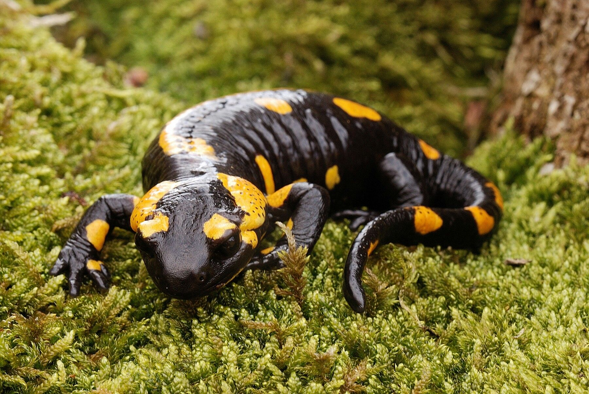
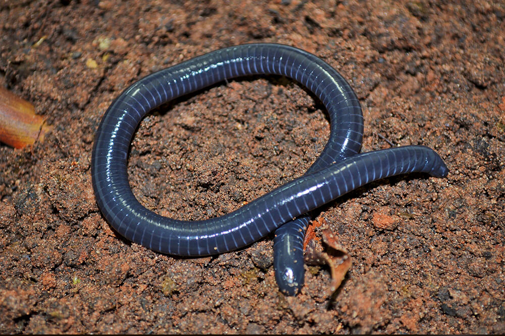
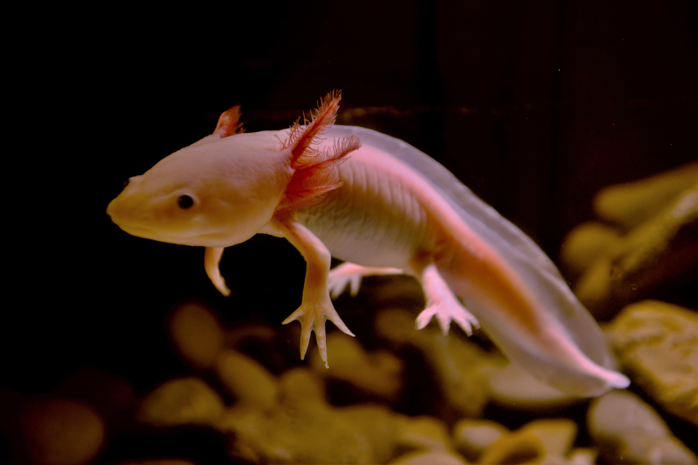

RANA
SALAMANDRA
CECILIA
TRITON ALPINO
AJOLOTE
RANA

La rana campestre es especie de anfibio anuro perteneciente a la familia Ranidae. Es de gra tamaño , que mide entre 10 y 20cm de longitud su hocico-cocha y pesa entre 60 a 900g. larvas Excepcionales Grandes, miden entre 15 a 18cm aproximadamente ellos Habitan en zonas húmedas, especialmente prados asociados a masas de agua dulce como charcas y lagunas, también puede avistarse en zonas boscosas, tundra y estepa. En épocas fría rana arvalis suele invernar bien en el propio agua o en lugares que seleccionan en la tierra.
Caracteristicas
- La rana campestre es un maestro de camuflaje por su increible piel y su facilidad de adaptacion dependiendo del clima
- La especie es caracterizado por su cintura delgada que permite un mayor impulso al momento de saltar y posee una piel rugurosa
- Son execelentes saltarinas debido a sus largas patas traseras que proporcionan una gran distancia en cuanto al salto
- su scolor pueden varir desde el verde olivia hasta el marron o gris, con manchas o rayas oscuras en el doros. esto les permite camuflajearse en diferentes entornos
- Durante la temporada de reproduccion, las ranas campestre migran desde areas de alimentacion hacia charcas o estanques donde depositan sus huevos.
SALAMANDRA

La salamandra es un anfibio que pertenece al orden Urodela. Vive en hábitats húmedos y se encuentra principalmente en regiones templadas y tropicales de todo el mundo, desde bosques hasta praderas y montañas. Muchas especies de salamandras son acuáticas, mientras que otras prefieren ambientes terrestres.
Caracteristicas
- La mayoría de las salamandras tienen una piel permeable que les permite respirar a través de ella, lo que las hace especialmente sensibles a la contaminación del agua y del aire.
- Tienen la capacidad de regenerar partes de su cuerpo, incluida la cola, lo que les permite sobrevivir a lesiones y ataques de depredadores.
- Aunque algunas especies pueden vivir en tierra, muchas salamandras pasan al menos parte de su vida en el agua o en ambientes muy húmedos, como arroyos, estanques y bosques lluviosos.
- Al igual que otros anfibios, las salamandras experimentan una metamorfosis desde la etapa larval hasta la etapa adulta. En la etapa larval, muchas especies tienen branquias y viven exclusivamente en el agua.
- Las salamandras varían mucho en tamaño y color, desde especies pequeñas que apenas alcanzan unos pocos centímetros de longitud hasta otras que pueden crecer varios metros. Su coloración puede ser brillante y vistosa para advertir a los depredadores de su toxicidad, o puede ser más discreta para camuflarse en su entorno.
CECILIA

La cecilia es un tipo de anfibio perteneciente al orden Gymnophiona. Son animales alargados, sin patas, que viven en hábitats húmedos, como suelos forestales y tropicales
En cuanto a sus condiciones de vida, las cecilias requieren hábitats húmedos y suelos que les permitan excavar túneles. La deforestación y la degradación de los hábitats naturales pueden afectar negativamente su supervivencia, ya que dependen de la vegetación densa y del suelo húmedo para sobrevivir. Además, son sensibles a la contaminación del agua y del suelo debido a su piel permeable.
Caracteristicas
- Cuerpo alargado y sin patas: Las cecilias tienen un cuerpo largo y cilíndrico, adaptado para vivir bajo tierra y excavar túneles.
- Piel lisa y altamente permeable: Su piel les permite respirar a través de ella y absorber agua y nutrientes del suelo.
- Ojos reducidos o ausentes: Muchas especies de cecilias tienen ojos muy pequeños o incluso carecen de ellos, ya que no los necesitan para la vida subterránea.
- Mandíbulas fuertes: Tienen mandíbulas bien desarrolladas que les permiten alimentarse de presas pequeñas y blandas que encuentran bajo tierra.
- Regeneración: Al igual que otros anfibios, las cecilias tienen la capacidad de regenerar partes de su cuerpo, como la cola, en caso de lesiones o pérdida.
TRITON ALPINO

El tritón alpino es un anfibio semiacuático que vive en Europa. Tiene un cuerpo delgado y liso, con coloración variable y manchas oscuras en su espalda. Pasa parte de su tiempo en el agua y parte en tierra, preferentemente en zonas boscosas y montañosas cerca de cuerpos de agua dulce
Caracteristicas
- Hábitat montañoso: El tritón alpino, también conocido como Ichthyosaura alpestris, habita en áreas montañosas de Europa central y meridional, especialmente en altitudes elevadas.
- Tamaño pequeño: En comparación con otras especies de tritones, el tritón alpino es relativamente pequeño, con una longitud que generalmente oscila entre los 7 y los 12 centímetros.
- Coloración variable: Su coloración puede variar desde tonos marrones y grises hasta verdes, con manchas negras y a menudo con un patrón moteado que les ayuda a camuflarse en su entorno.
- Vida acuática y terrestre: Aunque pasa la mayor parte de su vida en el agua, especialmente durante la época de reproducción, el tritón alpino también puede encontrarse en tierra firme, especialmente durante la temporada de cría.
- Reproducción ovovivípara: Las hembras de tritón alpino depositan sus huevos en el agua, donde se desarrollan hasta que eclosionan. A diferencia de los anfibios que ponen huevos en masa, los tritones alpinos dan a luz crías vivas que emergen completamente desarrolladas de los huevos.
AJOLOTE

el ajolote es una salamandra que vive en lagos y canales de México, como el Lago de Xochimilco. Tiene un cuerpo alargado y plano, con branquias externas para respirar bajo el agua. Se caracteriza por conservar rasgos juveniles en la edad adulta. Son carnívoros, se alimentan de insectos, gusanos y peces pequeños, y son nocturnos, escondiéndose durante el día entre la vegetación acuática.
Caracteristicas
- Neotenia: Conserva rasgos juveniles en la edad adulta, como las branquias externas
- Adaptación acuática: Vive en hábitats acuáticos y tiene un cuerpo adaptado para nadar.
- Regeneración: Tiene una notable capacidad para regenerar partes del cuerpo, como extremidades y órganos internos.
- Carnívoro: Se alimenta de insectos, gusanos y pequeños peces, siendo principalmente nocturno en su caza.
- Importancia cultural: Es un símbolo cultural y una especie emblemática de México, además de ser objeto de investigación científica debido a su capacidad de regeneración y neotenia.